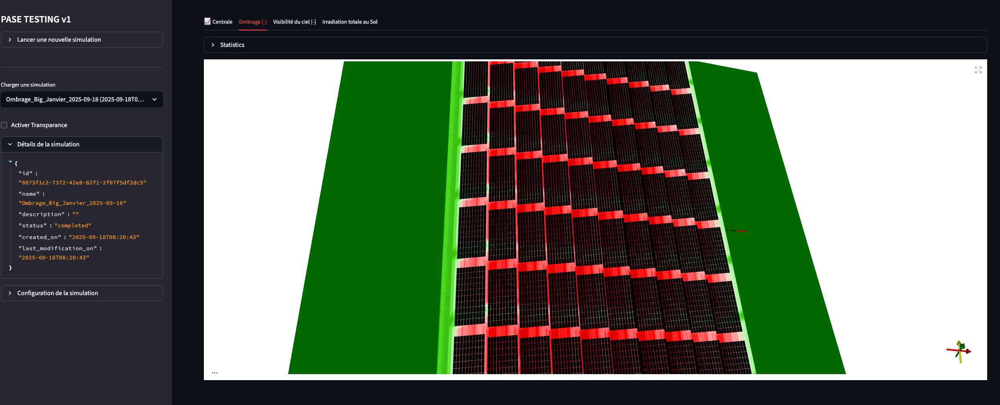

Solar Panel Shadow Simulation — 3D Web Application
A full-stack scientific web application built for
Davele at BionomeeX, designed to
simulate shadows, irradiance, and energy performance across
complex solar panel installations. The system provides
high-precision 3D visualizations and detailed irradiance statistics
for any field configuration.
Solar Simulation3D VisualizationStreamlitPythonDockerMultiprocessingDevOpsPASE Library
🔍 The Challenge
Simulating solar shadows and irradiance across large photovoltaic
fields is computationally demanding. Each simulation depends on
numerous parameters — geographic position, date, solar trajectory,
panel orientation, tilt, and spacing — requiring real-time 3D
feedback to guide configuration choices. The goal was to deliver a
responsive and accurate web app capable of handling
heavy physics calculations while remaining fluid and accessible to
non-technical users.
🧮 Heavy computational load across large panel arrays
💻 Need for smooth visualization and background computation
💡 The Solution
The Solar Panel Shadow Simulation App provides a
complete, parameter-driven environment for modeling and visualizing
solar installations. Users can define every aspect of a setup — from
panel dimensions and pitch to site latitude and time resolution —
then launch simulations that compute irradiance, shadow overlap, and
light diffusion using the open-source scientific library
PASE.
The results are displayed in an interactive
3D visualization window, enabling users to view how
shadows evolve through the day and how total irradiance changes with
geometry. Computations are handled in the background by a dedicated
backend service, allowing the user to close the page or run multiple
simulations in parallel.

3D visualization of solar panel shadows
⚙️ Technical Architecture
Frontend: Streamlit web interface with 3D scene
rendering and parameter control
Backend: Python API handling simulation requests
asynchronously
Computation: Multi-process system using
multiprocessing to run concurrent simulations
Scientific engine: PASE library for solar
geometry and irradiance computation
Containerization: Full Docker deployment with
persistent volume management
Task management: Background queue system allowing
simulations to continue when UI is closed
This architecture ensures efficiency, scalability, and robustness,
making it suitable for large solar projects or educational demos
requiring multiple concurrent simulations.
📊 Results
The application enables engineers and clients to
visualize and quantify the impact of configuration changes
instantly. The backend’s multiprocessing system reduces total simulation
time by a lot (the more thread the faster) compared to sequential
execution.
📈 Improved DevOps workflow and deployment automation
🧠 My Role
I was responsible for developing the
backend architecture and implementing the
multi-process computation system. My work focused
on performance, scalability, and seamless integration with the
Streamlit interface.
⚙️ Designed and implemented the multi-process simulation backend
🐳 Set up full Dockerized environment and CI/CD deployment
🧮 Integrated PASE scientific library for shadow and irradiance
modeling
🔗 Developed communication API between backend and Streamlit
frontend
🧠 Optimized resource allocation and background task scheduling
This project reinforced my expertise in
Python system design, DevOps, multiprocessing, and scientific
software integration
— bridging simulation performance with web-based usability.